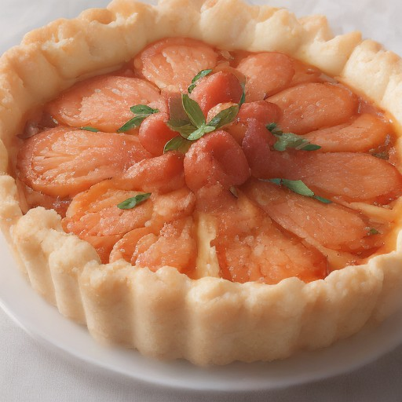

デザート
サーモン × アボカドの悪魔的チーズタルタルグラタン

濃厚なアボカドと、淡麗なサーモンが、クリーミーチーズで包まれたグラタンは、悪魔的な美味しさ！ 意外な組み合わせが、本当に美味しい一品！
💡 こんな時・こんな人におすすめ！
特別な日に、友達とシェアするならピッタリ！
📋 必要な材料（ポストイット風）
材料リスト 1
- サーモン150g
- アボカド1個
- クリーミーチーズ100g
材料リスト 2
- 卵2個
- バター5g
- パン粉適量
🍳 作り方ステップ
1
サーモンを細切りにして、塩こしょうで味付けする。
2
アボカドは、皮をむき、縦に切って、1cmくらいの大きさになるようにカットする。
3
卵は泡立て、ボウルに混ぜる。
4
パン粉を混ぜ合わせ、バターを溶かし、全体に混ぜる。
5
器にバターを塗り、生地を敷き詰める。
6
アボカドとサーモンを器に配置し、生地を押し込む。
7
生地を密着させる。
8
チーズを生地の表面に塗る。
9
卵を器の上に流し込む。
10
オーブンを180℃に予熱する。
11
15分焼成後、チーズが溶け、卵が固まるまで加熱する。
12
火を止めて、10分間放置して冷まして完成。